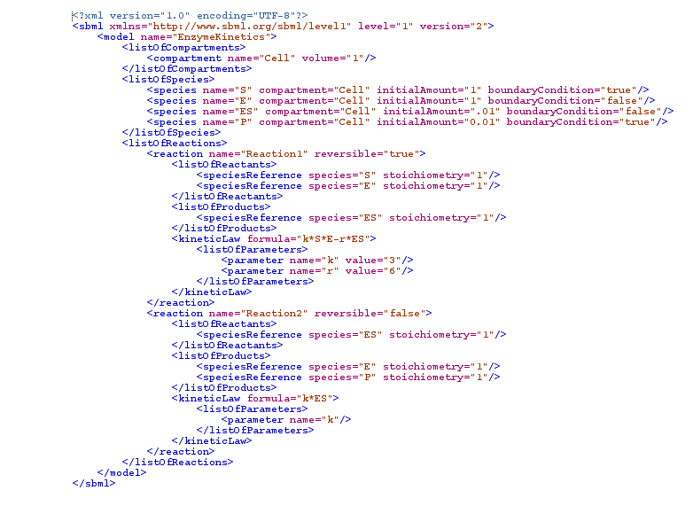
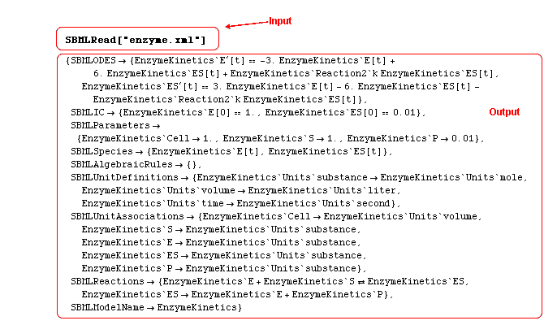
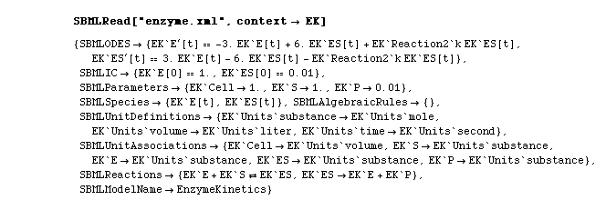
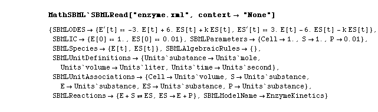

| MathSBML Home Page | MathSBML Site Map |
SBMLRead Variable Names and Scopes (Contexts)Return Value | Options | Variable Names and Scoping | Examples |
|
SBMLRead will attempt to match all identifiers in the Mathematica version of the model as closely as possible to the name in the model. Identifiers typically will be the values of > "name" fields in SBML Level 1 files and the values of > "id" fields in SBML Level 2 files. SBML Characters Not Allowed in Mathematica IdentifiersThe only character that is allowed in an SBML identifier is the underscore ("_") character. SBMLRead will replace the underscore character with the \[UnderBracket] character (which looks like ). For example, if the model contains a variable A_B it will be represented in Mathematica as the variable . To use a different character, the user may set the value of the option underscore to any other valid character in Mathematica. Mathematica Representation of Invalid CharactersSBMLRead accepts identifiers that contain any unicode character. This is an extension beyond the standard SId Type in SBML. Since many unicode characters are not permitted in Mathematica, invalid characters are replaced with the character string #n#, where n is the decimal unicode representation of the character, and # is the Mathematica \[NumberSign] character (unicode 63268), which is different from the Shift-3 (cross-hatch, #, or ASCII 35) character common on American keyboards. The number sign character is considered a "letter-like" form by Mathematica, and any letter-like form may be included in an identifier. For example, a user may specify a variable identifier as Hello[World], with embedded brackets. Brackets may not be embedded in a Mathematica identifier, and the variable will be represented as Hello#91#World#93# by SBMLRead. Variable Scoping (Contexts)SBML model variables are defined in a local context; the name of the context is determined by the model "name" in SBML Level 1, and by the model "id" in SBML Level 2. Thus if the SBML model foo contains species A and B, and global parameters f and k, they will be represented as foo`A, foo`B, foo`f, and foo`k, respectively. Local parameters k and kf defined in reactions R1 and R2 will become foo`R1`k, foo`R1`kf, foo`R2`k, and foo`R2`kf, respectively. Mathematica represents the scope of a symbol by its context. The context of a variable is indicated by predicating it with a string of characters ending in the back-quote character (normally found to the lefet of the number 1 on American keyboards). For example, foo`fred and fooo`fred represent two different variables in two different contexts, foo` and fooo` Mathematica contains a number of standard contexts. In particular, any variables that you type in during a Mathematica session that do not explicitly include a context are placed in the Global` context. You do not have to explicitly include the context in Global` variables. Thus the identifiers Barney and Global`Barney represent the same variable. You can change the default context form Global` to something else by changing the value of the Mathematica identifier $Context. Mathematica also provides a global variable $ContextPath (its default value is {Global`, System`} that gives a list of contexts to search, after $Context, in trying to find the definintion of a symbol. Standard functions like List or Plus are defined in the System` context. You do not have to explicitly state the name of the context for any variables in contexts listed in $ContextPath. When you load a new package, a new context is added to $ContextPath. For example, when you load MathSBML, then $ContextPath becomes {Global`, System`, MathSBML`}. The function SBMLRead is really MathSBML`SBMLRead but you can omit the MathSBML` because it is included in $Context$Path. For more detail, the user should refer to The Mathematica Book section 2.6.8. ExampleSuppose we have encoded a model in the file enzyme.xml,  If we call SBMLRead without any options, the following information will be returned:  Because the model name is EnyzmeKinetics, all symbols are prefaced with their context EnzymeKinetics`. Additionally, the parameter k in reaction Reaction2 does not have a value assigned to it, so that in the list of differential equations, rather than being evaluated, it is specified as EnzymeKinetics`Reaction2`k. All units are placed in their own context, specified in general as model-identifier`Units`; in this case, the units are in the context EnzymeKinetics`Units. It is also worth observing at this point that this model contains a species by the name of E. Normally in Mathematica, the sybmol E would evaluate to the real number 2.71828...; by putting the variable within the model's context, this conflict does not occur. Having the word EnzymeKinetics pop up everywhere makes the model seem a bit wordy. The following will shorten it to a simple EK:  If we really want the variables to all be in the global context, we could instead use the option context->None. However, this can cause conflicts if we are not very careful. For example, now that the variable E is placed in the global context, it is replaced with the irrational number e. Disastarous results would occur if we tried to solve this model.  The basic rule to learn from this example is this: never override the context unless you are absolutely sure that no conflicts will occur. |